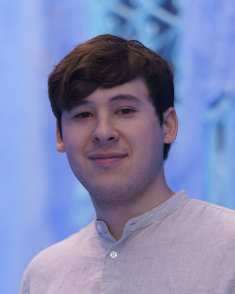
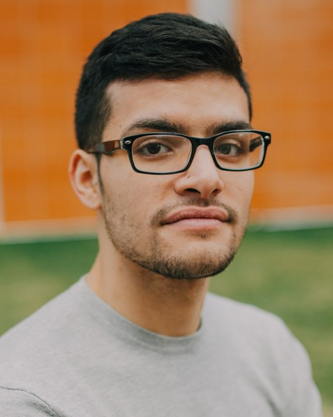
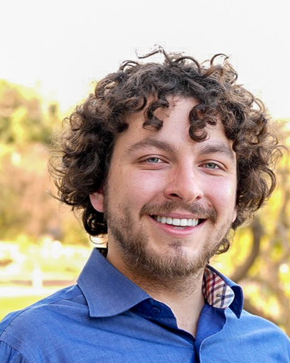
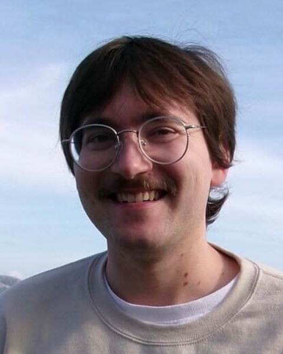
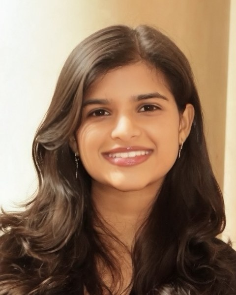
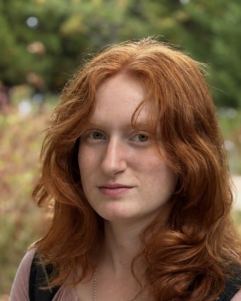
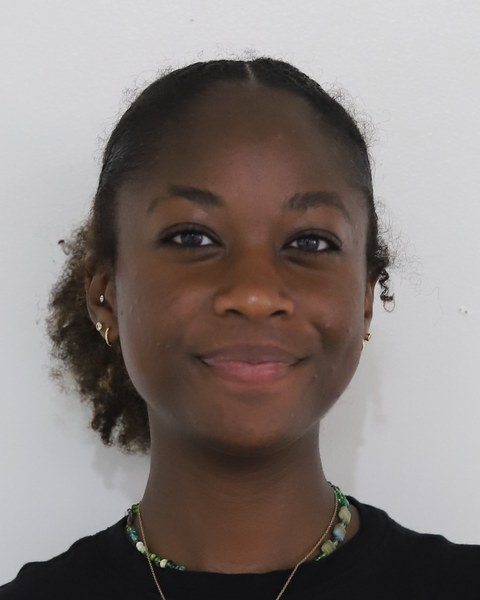

People

Juan R. Chamorro
Juan earned his BA and his PhD in chemistry at Johns Hopkins University, working with Tyrel McQueen. He was an NSF MPS-Ascend Postdoctoral Fellow at the University of California, Santa Barbara, in the Materials Department and the Materials Research Laboratory, with Ram Seshadri and Stephen Wilson. He started the group at Carnegie Mellon in August 2024. His research covers frustrated magnetism, superconductivity, and correlated metals, and the crystal growth needed to study them.
Wean Hall 4305 · (412) 268-7178 · jrchamorro@cmu.edu

Julian Marmo
Julian was raised in Queens, New York. His earlier research spans device fabrication, material development for polymer additive manufacturing, and metamaterial design. He now works on quantum materials synthesis and flux crystal growth, and leads development of the group's AutoFlux platform. In his free time he enjoys card games, watching sports, reading, and spending time with his dogs. He joined the group in Fall 2024.

Nicholas Shkolnikov
Nicholas is originally from San Francisco. His earlier research spans CO2 emissions mitigation through green methanol and dimethyl ether synthesis, and failure analysis of lithium-ion batteries. He now researches bulk solid state synthesis and characterization of inorganic compounds that can host quantum phenomena. In his free time he enjoys running, cooking, reading, and board games. He joined the group in Fall 2024.
Tong Wang
Tong was born in Dalian, China. Her earlier research spans semiconductors and DFT calculations. She now works on materials synthesis and characterization as well as AI computer vision. In her free time she enjoys music, playing the zheng (a traditional Eastern stringed instrument), and building LEGO. She joined the group in Fall 2024.

Hayden Nuyens
Hayden grew up in San Rafael, California. His earlier research spans radioactivity, optics, and deep learning. He now investigates solids with complex quantum mechanical behavior. In his free time he enjoys composing and listening to music, practicing bass guitar, pestering his cat, and playing video games. He joined the group in Fall 2025.

Dhiya Srikanth
Dhiya joined the group in Fall 2026.

Emma Greco
Emma works on flux growth of frustrated magnetic materials, from powder preparation and tube sealing through furnace operation and characterization of the resulting crystals.

T’Ana Moore
T’Ana works on the imaging side of AutoFlux, where her background in cameras and image capture meets the problem of watching a crystal grow inside a furnace.
Megan Yeager
Megan works on furnace and apparatus design for AutoFlux, including a design study for a purpose-built growth furnace.
- Gary ZhangNSF REU student, Summer 2026
- Abby ChenUndergraduate researcher, 2025 to 2026
- Luis HierroUndergraduate researcher, 2025 to 2026
- David LiUndergraduate researcher, 2025 to 2026
- Daniel YinUndergraduate researcher, 2025 to 2026
- Ryan NgaiUndergraduate researcher, Fall 2025
- Stanley HolewaNSF REU student, Summer 2025
- Cassius NelsonUndergraduate researcher, Spring 2025
Prospective students. We do not have funded openings for new PhD students at this time. At CMU, MSE admissions decisions are made by the department rather than by individual faculty. CMU undergraduates interested in research are welcome to get in touch. No postdoctoral positions are available at this time.